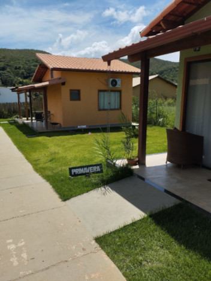
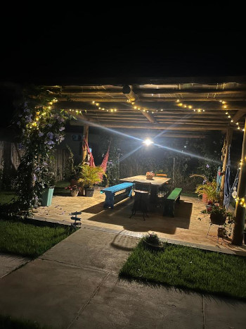
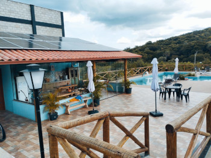
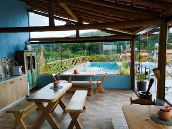

A Pousada
Nossa pousada foi planejada para oferecer conforto, praticidade e momentos inesquecíveis em meio à natureza. Com 1.700 m² de área total, reunimos estrutura moderna, ambientes acolhedores e espaços pensados para todos os tipos de hóspedes — famílias, casais e grupos.
Dispomos de chalés de 26 m², equipados para garantir uma estadia tranquila e confortável. Chalés suite de 26m quadrados equipados com Cama casal Queen,cama solteiro e cama auxiliar. TV com Streaming, frigobar e ar condicionado. Possuímos uma área de piscina linda com vista para a serra e a natureza. Para maior inclusão e acessibilidade, contamos também com um chalé especialmente adaptado, garantindo autonomia e segurança a todos os visitantes.


Temos também um pergolado com redes de descanso e mesa ampla para conforto e relaxamento dos hóspedes.
A área de lazer é um dos grandes destaques: uma ampla piscina de 14 metros de comprimento por 4 metros de largura com 90 mil litros, ideal para relaxar, se refrescar e aproveitar o sol. As famílias com crianças contam ainda com uma piscina infantil, garantindo diversão com segurança.
Oferecemos uma cozinha completa de uso compartilhado, integrada à área da piscina e aos banheiros, proporcionando comodidade e convivência entre os hóspedes.


Os pequenos também têm seu espaço garantido na nossa charmosa Área Kids, desenvolvida para brincadeiras seguras e criativas.
Completando a estrutura, contamos com estacionamento privado e recepção, garantindo suporte, comodidade e tranquilidade durante toda a estadia.